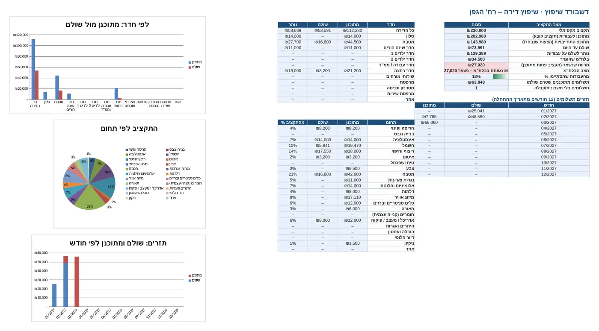
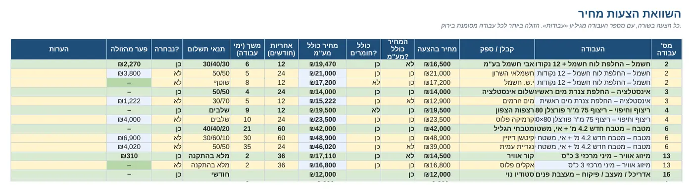
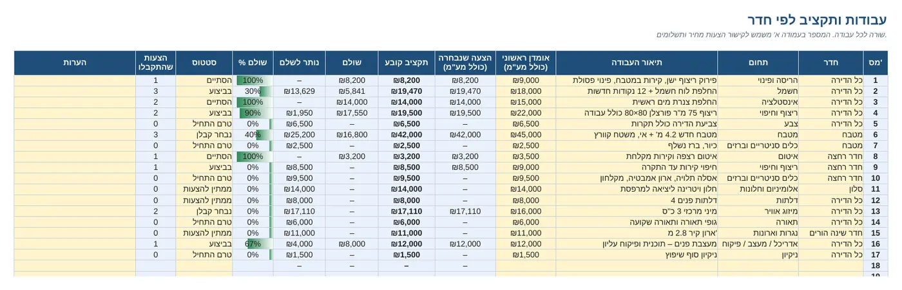
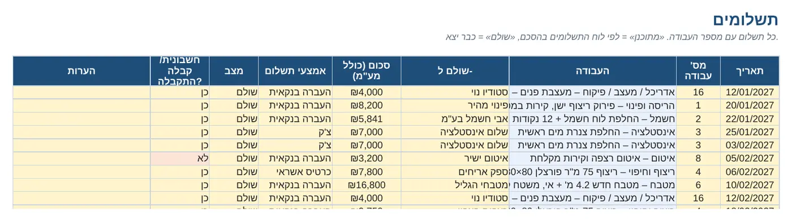

אקסל תקציב שיפוץ: מתכנן שיפוץ דירה בעברית
כל השיפוץ בקובץ אחד: עבודות לפי חדר, השוואת הצעות מחיר באותו בסיס של מע"מ, לוח תשלומים, בלת"מ ודשבורד שמראה בכל רגע כמה התחייבתם, כמה שילמתם וכמה נשאר.
- השוואת הצעות כולל מע"מ 18%
- בלת"מ עם התראה
- תזרים תשלומים לפי חודש
- רשימת בדיקה לקבלן (Word)
עוד לא יודעים כמה זה יעלה? נסו את מחשבון עלות השיפוץ החינמי.

מה יש בקובץ
7 גיליונות מחוברים. מקלידים בתאים הצהובים, וכל השאר מחושב לבד.
עבודות לפי חדר ותחום
100 שורות: חדר, תחום (חשמל, ריצוף, מטבח…), תיאור, אומדן, סטטוס. התקציב מתעדכן לבד כשבוחרים הצעה.
השוואת הצעות מחיר
כל ההצעות מומרות למחיר כולל מע"מ. הזולה מסומנת, ורואים פער, אחריות, משך ותנאי תשלום.
תשלומים ותזרים
תשלומים ששולמו ותשלומים מתוכננים לפי ההסכם, ותזרים לפי חודש כדי לדעת כמה כסף צריך ומתי.
בלת"מ
קובעים אחוז לבלתי צפוי, והדשבורד מראה כמה ממנו נשאר ומתריע כשנוגעים בו.
מעקב חשבוניות
כל תשלום בלי חשבונית או קבלה מסומן, כדי שבסוף השיפוץ יהיו לכם כל המסמכים לאחריות.
אנשי מקצוע
טלפונים, מספרי רישום, ביטוח והמלצות במקום אחד. בנוסף: רשימת בדיקה להדפסה לפני חתימה עם קבלן.
ככה זה נראה
צילומי מסך מקובץ הדוגמה המצורף, שיפוץ דירת 3 חדרים. המחירים בדוגמה הם להמחשה ואינם הצעת מחיר.



איך עובדים עם הקובץ
רושמים עבודות ואומדן
מה עושים בכל חדר והערכה ראשונית. כבר עכשיו רואים אם זה בתוך התקציב.
משווים הצעות
רושמים את ההצעות מהקבלנים, משווים כולל מע"מ ובוחרים. התקציב מתעדכן לפי הבחירה.
עוקבים אחרי תשלומים
כל תשלום נרשם, והדשבורד מראה כמה נשאר ואם הבלת"מ עדיין שלם.
מה מקבלים בהורדה
- מתכנן תקציב שיפוץ: קובץ אקסל ריק ומוכן לעבודה
- קובץ דוגמה מלא: שיפוץ דירת 3 חדרים עם הצעות ותשלומים
- רשימת בדיקה לפני חתימה עם קבלן: קובץ Word להדפסה
.xlsx ו-.docx, בלי מאקרו. רכישה חד-פעמית.
שאלות נפוצות
באיזו תוכנה זה עובד?
Excel (2010 ומעלה, כולל Microsoft 365 ו-Excel לנייד) ו-Google Sheets: מעלים ל-Drive ובוחרים «פתיחה באמצעות Google Sheets». גם LibreOffice עובד. אין מאקרו.
איך הקובץ משווה הצעות מחיר?
רושמים כל הצעה עם מספר העבודה ומסמנים אם המחיר כולל מע"מ. הקובץ מוסיף 18% כשצריך, כדי שכל ההצעות יושוו באותו בסיס, מסמן את הזולה ומראה את הפער של כל הצעה ממנה. ליד המחיר רואים אחריות, משך עבודה ותנאי תשלום.
מה זה בלת"מ ולמה הקובץ מתריע עליו?
בלת"מ (בלתי צפוי מראש) הוא סכום שמשאירים בצד לדברים שמתגלים תוך כדי עבודה. קובעים אחוז (ברירת המחדל 15%), והדשבורד מראה כמה ממנו כבר נאכל ומתריע באדום כשמתקרבים לחריגה.
זה מתאים גם לבנייה או לשיפוץ חדר אחד?
כן. רשימת החדרים והתחומים ניתנת לעריכה, ויש 100 שורות עבודה. מתאים משיפוץ אמבטיה ועד שיפוץ דירה מלאה. לבניית בית מאפס הקובץ יעבוד, אבל לא מכסה שלבי היתר ובנייה הנדסיים.
מה זה קובץ ה-Word?
רשימת בדיקה להדפסה: מה חייב להופיע בהצעת מחיר, מה לבדוק על הקבלן, לוח תשלומים הוגן, שאלות לפגישה וטבלה להשוואה מהירה בין 3 קבלנים.
איך מקבלים את הקבצים?
מיד אחרי התשלום ב-PayPal נפתח עמוד הורדה. אפשר לשלם בכרטיס אשראי דרך PayPal גם בלי חשבון.
זה ייעוץ הנדסי או משפטי?
לא. זה כלי תכנון ומעקב. בעבודות מבניות, חשמל וגז עבדו רק עם בעלי רישיון, ובהסכם גדול כדאי להתייעץ עם עורך דין.